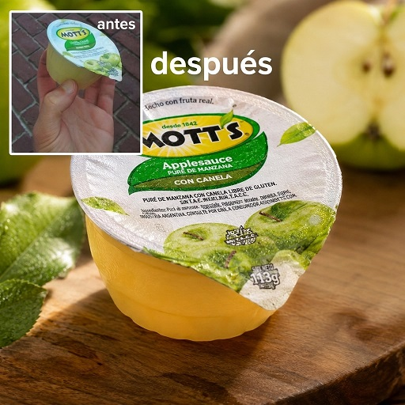

Transformador IA de Fotografía de Producto Publicitarios

Este prompt está diseñado para transformar fotos caseras o poco profesionales de productos en fotografías publicitarias de estudio de alta gama (calidad catálogo o e-commerce de lujo) utilizando herramientas de Inteligencia Artificial que soporten entrada de imagen (Image-to-Image / Multimodal).
El prompt utiliza una estructura técnica sólida de ingeniería de prompts:
- Asignación de rol: "Actúa como fotógrafo profesional..." define el vocabulario visual, estándares de calidad y criterio técnico del modelo.
- Estructura en 5 pilares clave: Fondo, Contraste, Iluminación, Enfoque y Composición. Cubre los 5 fundamentos técnicos de la fotografía de producto.
- Cláusula de fidelidad (Guardrail): "Conserva la forma, etiqueta, colores y características..." Evita que la IA invente un producto nuevo o altere el logo/etiqueta.
- Calidad de salida: Define el acabado estético (hiperrealista, 8k, fotografía publicitaria de lujo).
| Ventaja | Impacto |
|---|---|
| 💰 Ahorro de costos | Reduce drásticamente la necesidad de sesiones de fotos de estudio complejas. |
| 🛡️ Consistencia de marca | La instrucción de preservar colores y etiquetas protege la identidad visual del producto. |
| 📸 Efecto Bokeh / Enfoque | Separa visualmente el producto del fondo dando aspecto de cámara réflex profesional (DSLR). |
| 🔄 Versatilidad total | Ideal para cosméticos, botellas, calzado, tecnología, alimentos empaquetados y más. |
Toma una foto de tu producto bien iluminada (preferiblemente con luz natural). Asegúrate de que no esté cortado en los bordes. No te preocupes por el desorden del fondo, la IA lo reemplazará por completo.
Cada instrucción ha sido optimizada y verificada para el ecosistema nativo de Google Flow (Nano Banana 2 / OmniFlash 1.1) por AI DAN SOLUTIONS.
Puedes adaptar el punto 1 (FONDO) a tu gusto. Por ejemplo:
• Cosméticos: "...sobre una base de mármol blanco con gotas de agua sutiles."
• Productos Eco: "...sobre una mesa de madera rústica con hojas verdes desenfocadas."
• Tecnología: "...en un set minimalista con fondo gris mate y luces de neón sutiles."
Si la IA altera texto o detalles, envía un ajuste: "Genera de nuevo manteniendo el texto exacto de la etiqueta original sin alterar las letras."
- Evita reflejos directos en la foto original: Si el producto tiene vidrio o plástico reflectante, tómale foto sin flash directo para que la IA no confunda los destellos con imperfecciones de forma.
- Resolución nítida: Cuanto más enfocada y clara sea la foto original, mejor detectará la IA los bordes y las texturas reales.
¿Qué es?
Convierte la foto en bruto de cualquier producto comercial en una producción publicitaria de alta gama con iluminación de estudio, reflejos calibrados y escenografías premium.
¿Cómo usarlo?
- Abre Google Flow y configura Nano Banana 2 en proporción 1:1 o 16:9.
- En Ingredients, sube la imagen de tu producto comercial (+ Add Image).
- Nombra el ingrediente como
Producto 1para preservar la silueta, envase y etiquetado original. - Pega el prompt publicitario y genera la sesión fotográfica comercial de nivel internacional.
Cómo personalizar / Parámetros:
Indica el entorno deseado (ej: podio de mármol negro, salpicaduras de agua fresca, hojas de eucalipto, minimalismo nórdico) en la descripción del prompt.
Actúa como un fotógrafo profesional de producto y director de arte publicitario. Analiza la imagen adjunta y genera una nueva fotografía comercial de alta gama del mismo producto aplicando estrictamente estas 5 mejoras visuales: 1. FONDO (Background): Elimina cualquier distracción o desorden. Coloca el producto sobre un fondo limpio, elegante y contextualmente relevante que complemente el producto sin robarle protagonismo. 2. CONTRASTE (Contrast): Maximiza el contraste visual entre el producto y el entorno para que el objeto se despegue del fondo y resalte al instante. 3. ILUMINACIÓN (Lighting): Aplica iluminación de estudio profesional y direccional (luz suave con sombras definidas o iluminación cálida de catálogo) que resalte los materiales, texturas y formas del producto. 4. ENFOQUE (Focus): Asegura una nitidez extrema y ultra detallada en el producto (punto focal absoluto), aplicando una profundidad de campo sutil (fondo ligeramente desenfocado / bokeh). 5. COMPOSICIÓN (Composition): Encuadre balanceado siguiendo reglas de composición comercial (como la regla de los tercios), dando sensación de profundidad, equilibrio y volumen publicitario. Conserva la forma, etiqueta, colores y características originales del producto. Calidad hiperrealista, 8k, fotografía publicitaria de lujo.